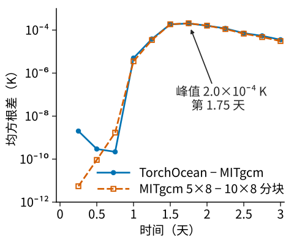
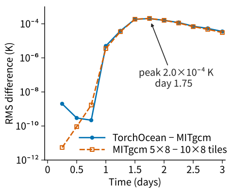

2026 年 3 月起独立开发Sole developer since March 2026
TorchOcean可微 GPU 海洋数值模式A differentiable GPU ocean model
用 PyTorch 实现 MITgcm 的海洋离散方案，同一个 GPU 程序计算正向积分和它的梯度；梯度既用于四维变分同化，也能在线训练模式内的神经网络。
TorchOcean implements the ocean discretizations of MITgcm in PyTorch so that one GPU program computes forward integrations and their gradients, which drive 4D-Var data assimilation and can train neural networks inside the model online.


结构Architecture
模式支持区域、全球经纬度和立方球网格，静力和非静力方程，以及开边界、KPP 垂向混合和潮汐强迫。代码约 12.8 万行 Python 和 1.5 万行 CUDA C++。
The model runs regional, global latitude–longitude and cubed-sphere grids with hydrostatic or nonhydrostatic equations, open boundaries, KPP vertical mixing and tidal forcing. The code is about 128,000 lines of Python and 15,000 lines of CUDA C++.
一个时间步分五个阶段，三处隐式求解的反向按转置方程或隐函数定理求导，不展开迭代；控制量从初始化和强迫进入，神经网络的参数也在其中。计算同化窗口的梯度时，按段保存起始状态，反向时逐段重算并回传。
A time step has five stages; the three implicit solves are differentiated through the transposed system or the implicit function theorem rather than by unrolling their iterations. Controls enter through the initialization and the forcing, and the parameters of a neural network are among them. To compute the gradient of an assimilation window, the program stores the first state of each segment and recomputes the segments in reverse order.
纯 PyTorch 参照实现之上，整步编译、手写 CUDA kernel 和多卡区域分解可以分别开关，开与不开只差舍入误差。
On top of the plain PyTorch reference, whole-step compilation, hand-written CUDA kernels and multi-GPU domain decomposition can each be switched on or off and change results only by rounding.
性能Performance
从 N=480 起，两张 A800 的每步耗时与 MITgcm 测到的最快核数相当。960×960×90 网格（8294 万个格点）上两卡 142 毫秒，MITgcm 用 576 核 162 毫秒、768 核 126 毫秒；非静力算例两卡 422 毫秒，MITgcm 用 400 核 1421 毫秒。
From N=480 on, two A800 GPUs take as long per step as the fastest MITgcm core count measured. On the 960×960×90 grid (82.9 million cells) two GPUs take 142 ms, against 162 ms for MITgcm on 576 cores and 126 ms on 768; the nonhydrostatic case takes 422 ms on two GPUs against 1421 ms on 400 cores.
同一算例从 PyTorch 直接执行时的每步 786 毫秒降到 142 毫秒：
The same case went from 786 ms per step under plain PyTorch to 142 ms:
- 重构时间步，整步编译只在求解器处断开；原先每步碎成 131 段并反复重编译。 The time step was restructured so torch.compile breaks only at the solver; it used to split into 131 pieces and recompile every step.
- 手写 43 个 CUDA kernel，合并 KPP 混合、隐式垂向平流、示踪物平流和水平黏性；KPP 边界层深度的 kernel 启动从 2786 次降到 2 次，快 80 倍以上。 43 CUDA kernels fuse KPP mixing, implicit vertical advection, tracer advection and horizontal viscosity; the KPP boundary-layer depth went from 2,786 launches to 2 and runs over 80 times faster.
- 给卡间通信加数据依赖，修好编译器重排通信造成的多卡死锁；双卡比单卡快 1.8 倍。 Data dependencies on the exchanges fix a multi-GPU deadlock caused by the compiler reordering communication; two GPUs are 1.8 times faster than one.
到 N=960 为止，一次代价函数加梯度的耗时是全速正向积分的 2.8 到 4.4 倍。
Up to N=960, one evaluation of the cost function and its gradient costs 2.8 to 4.4 times the full-speed forward integration.
四维变分同化4D-Var data assimilation
南海孪生试验：真值由 MITgcm 从 GLORYS 再分析起算，背景从 HYCOM 分析起算，观测从真值轨迹抽样再加噪声，有海面高度轨道、海表温度块和温盐剖面。网格 160×152×41，同化窗一天，共 52 个窗，2020 年的 4 个是测试窗；每窗用 L-BFGS 迭代 30 次。单张 A800 上算一次代价函数加梯度需 29 秒，每窗耗时中位数为 884 秒。
Twin experiments in the South China Sea: the truth is an MITgcm integration started from the GLORYS reanalysis, the background starts from the HYCOM analysis, and the observations (SSH tracks, SST blocks, temperature and salinity profiles) are sampled from the truth with noise. The grid is 160×152×41 and the window one day; of the 52 windows, the 4 in 2020 are test windows. Each window runs 30 L-BFGS iterations; one cost-and-gradient evaluation takes 29 s on one A800, and a window takes a median of 884 s.
窗后 3 天的预报误差 Q（温盐、流速和海面高度的归一化均方误差）在 52 个窗上平均从 0.809 降到 0.557，降低 31%，每个窗都下降；4 个测试窗降 28%，海面高度均方根误差降 33%。初始时刻分析增量与真实背景误差的相关系数中位数，海表温度为 0.82、温度为 0.61。
Three days after the window, the forecast error Q (normalized mean-square error of temperature, salinity, velocity and SSH) averaged over the 52 windows falls from 0.809 to 0.557, a 31% reduction, and it falls in every window; on the test windows Q falls by 28% and the RMS SSH error by 33%. The increments correlate with the true background error with median coefficients of 0.82 for SST and 0.61 for temperature.
KPP 对流混合系数对浮力跃变的敏感依赖曾把 10 天窗的梯度放大到 1028；TorchOcean 在新时刻按列用牛顿法联立求解温盐和对流系数，再按隐函数定理求导，方向导数与差分的相对误差约 10−6。
The sharp dependence of the KPP convective diffusivity on the buoyancy jump once amplified the gradient of a ten-day window to 1028; TorchOcean solves temperature, salinity and the convective diffusivity of each column together with a Newton iteration and differentiates through the implicit function theorem. The directional derivatives agree with finite differences to a relative error of about 10−6.
混合建模：在同化里训练神经网络Hybrid modeling: training a network inside the assimilation
调整初始场的那次反向积分，同样能把梯度传到生成初始场的神经网络。网络读入一个窗的观测和背景轨迹，直接输出初始场。在线训练的损失就是该窗的 4D-Var 代价函数，梯度穿过 TorchOcean 的积分到达网络参数，不需要目标分析场；对照的离线训练让同一网络拟合各训练窗的 4D-Var 分析场，训练时不跑模式。
The reverse integration that adjusts the initial state also carries the gradient to a neural network that produces it. The network reads the observations and background trajectory of a window and outputs the initial state. In online training the loss is the window's 4D-Var cost function, so the gradient passes through the TorchOcean integration to the network and no target analyses are needed; the offline comparison fits the same network to the 4D-Var analyses without integrating the model.
在 8 个验证窗和 4 个测试窗上，在线训练的网络补上差距的 86%，离线网络补上 75%，每窗耗时只有 4D-Var 的 1% 到 2%；只看不参与训练的 4 个测试窗，两者分别为 86% 和 77%。从在线网络的分析场再迭代 5 次可补到 98%，耗时为完整 4D-Var 的 29%。在线训练是以网络参数代替初始场作为控制量的强约束 4D-Var；同样的反向积分也能训练模式内部的网络。
Over the 8 validation and 4 test windows the online network closes 86% of the gap and the offline one 75%, at 1% to 2% of the 4D-Var cost; on the 4 test windows alone, which take no part in training, the two close 86% and 77%. Five more iterations from the online analysis close 98% at 29% of the full cost. Online training is strong-constraint 4D-Var with the network parameters in place of the initial state as the controls, and the same reverse integration can train networks inside the model.
| 分析场Analysis | 窗后 3 天 QQ at 3 d | 补上的差距Gap closed | 每窗耗时（秒）Cost (s) |
|---|---|---|---|
| 背景Background | 0.803 | 0% | 0 |
| 4D-Var，30 次迭代4D-Var, 30 iterations | 0.575 | 100% | 1412 |
| 在线训练的网络Network trained online | 0.606 | 86% | 19 |
| 离线训练的网络Network trained offline | 0.633 | 75% | 16 |
| 在线网络再迭代 5 次Online network, then 5 iterations | 0.580 | 98% | 407 |